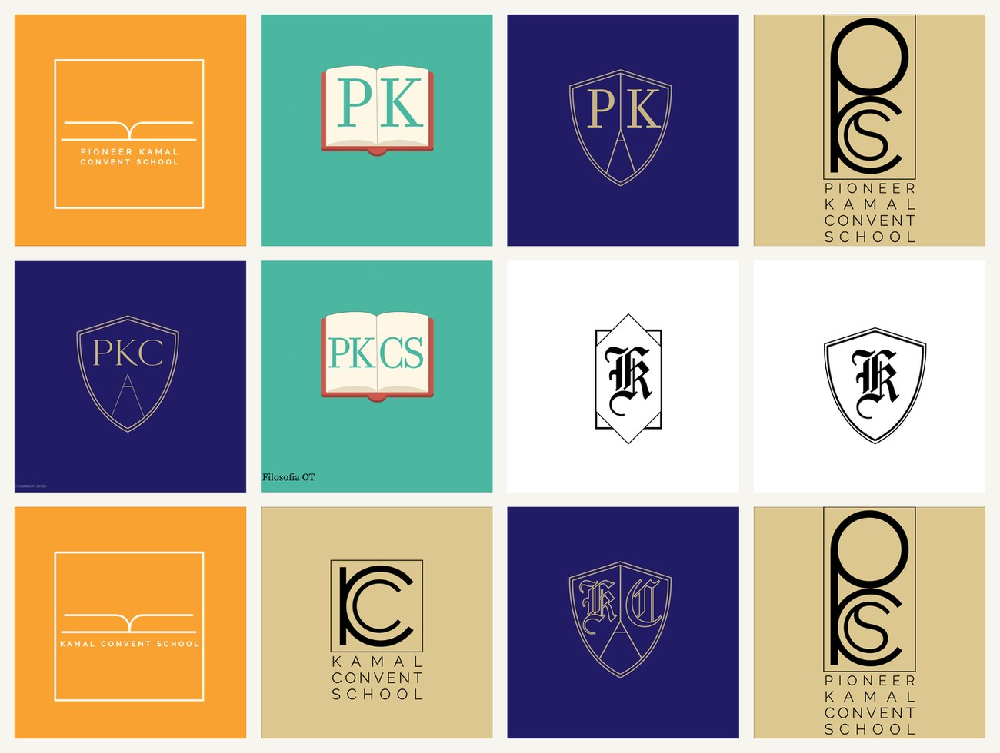
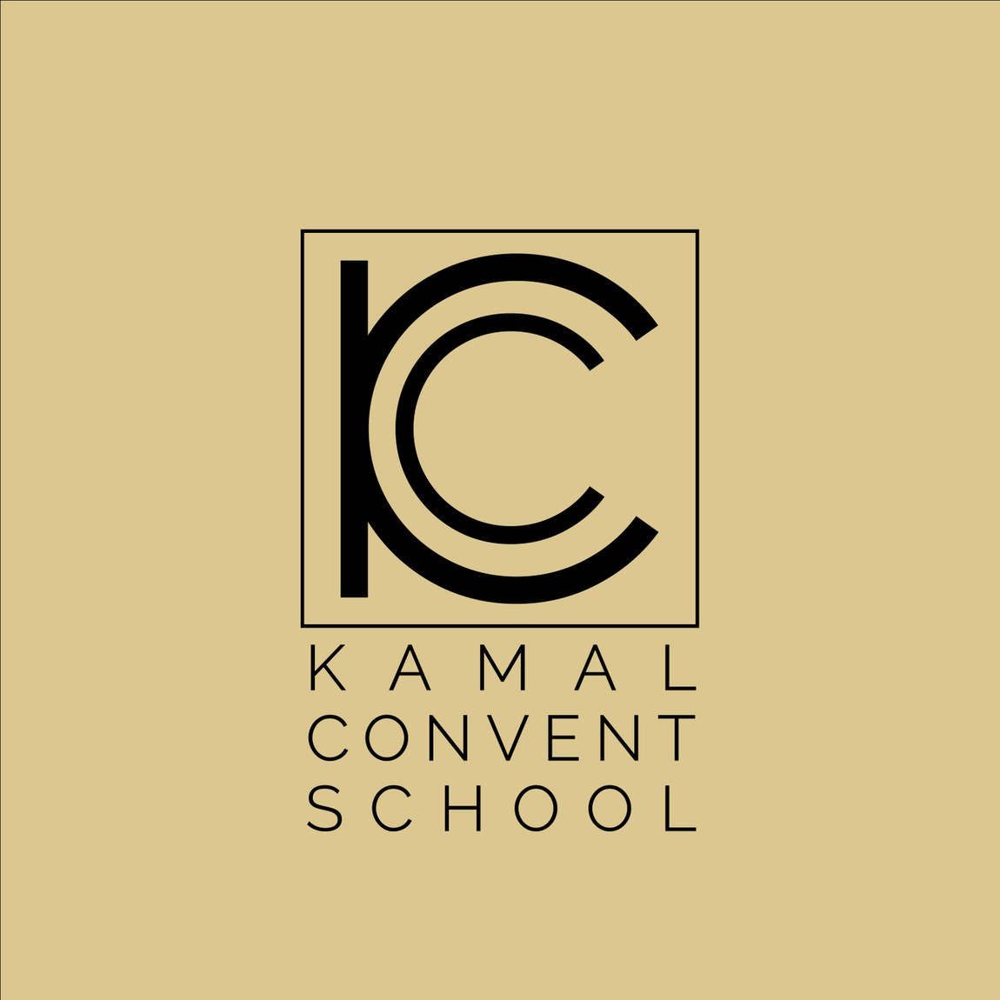

05Related Work
A logo identity exploration for Pioneer Kamal Convent School. The brief drew on the whole vocabulary of education marks — the open book, the academic shield, the initials — worked into PK, PKC and PKCS monograms across a saffron, teal and navy palette.
A school emblem has to earn a parent's trust and survive a six-year-old copying it onto an exercise book. So the exploration stayed with the honest, legible symbols of education — the open book, the shield, the initials — and pushed each as far as it could go.
Routes spanned a warm saffron, an optimistic teal and a traditional navy-and-gold, so the school could pick a tone as much as a mark.


Three ways to say "school".
One family cradles a blackletter "KC" inside an open book — knowledge, literally held. Another sets "PK" and "PKCS" into a fine-line academic shield for something more crest-like and formal. A third reduces the school to a confident geometric "KC" monogram over the full name. Each route is complete, so the choice is about character — friendly, formal or modern.
Saffron reads warm and Indian; teal feels fresh and contemporary; navy-and-gold is the safe, traditional academic register. Presenting the same marks across all three let the school see exactly how a single emblem would feel on a blazer badge, a gate sign and a report card before committing.